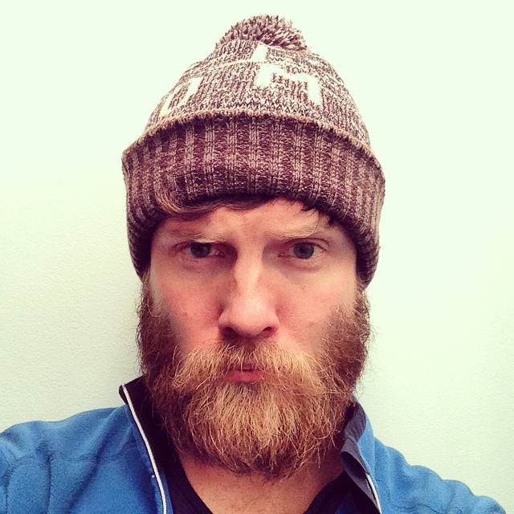

Thanks WordCamp Vernon!
I had an awesome time meeting you all. Thanks to everyone who came to my talk on Building your Audience. If you have any questions in the future, feel free to reach out at justin@nerdnorth.com or on Twitter: @mijustin
A lot of you asked for my slides, you can download them here:
If you liked my talk, you might also enjoy:
Who am I?
Hi! I'm Justin Jackson. You might know me from one of my podcasts (Product People, Build & Launch, MegaMaker)
I’ve been the Product Manager at two startups: Mailout.com and most recently at Sprint.ly.
In 2016 (after building up side-project revenue) I switched to building products full-time.
Here’s a few of the things I’ve launched (or helped launch): Network Effects, Remote Workers, Partyline, Product Press, and Levels Theme.
Cheers,
Justin Jackson
PS: say "hi" on Twitter! @mijustin